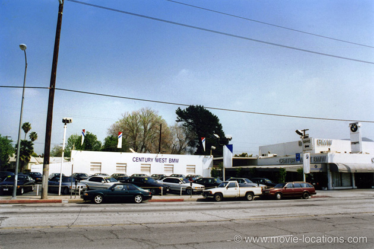

Psycho
Main Content
Although it's a Paramount film, the Bates house from Alfred Hitchcock's classic shocker can be found on the Universal Studios lot.
In 1943, MCA (Music Corporation of America) founded Revue Productions to broadcast radio programmes for troops overseas during WWII. When Revue branched out into television in the 1950s, the outfit needed its own production facilities and, in 1958, MCA bought the Universal Studios film lot in North Hollywood and renamed it Revue Studios.
Being a risky production, Psycho was shot on a tiny budget at Revue Studios, where the Alfred Hitchcock Presents TV series was filmed, using a television crew. Paramount Pictures rented the lot for Hitchcock.
In 1962 MCA bought out Universal Pictures and the one-time Revue lot is now part of the vast Universal spread.
And that's why the famous Bates house has ended up a main attraction on the famous tour at Universal Studios Hollywood. The entrance is at 100 Universal City Plaza, Universal City off the Ventura Freeway north of Hollywood.
The swamp, where Norman Bates (Anthony Perkins) disposes of Marion’s car, was intended to be filmed on location at a place called Grizzly Island near Fairfield, north of San Francisco, but the budget constraints forced Hitch to use ‘Falls Lake’ on the Universal-Revue backlot. The lake is named for the artificial falls built in the studio’s early days and you can still see it on the tour.
The fictitious town of ‘Fairvale’ was simply the Universal lot’s ‘Main Street’. ‘Fairvale Presbyterian Church’ can be seen on Circle Drive here, but ‘Fairvale Courthouse’ – which was the studio’s main executive office – has since been demolished.
Filming began on Stage 18-A, which is where the shower murder – arguably the most famous scene in movies – was filmed.
A Second Unit filmed the opening shot of Phoenix, Arizona, where Marion supposedly lives. Notice the Christmas decorations? The shot was filmed at the beginning of December, but Christmas doesn’t get mentioned and the weather seems surprisingly hot. To cover this glitch, the time and date are added over the shot (‘Friday, December the Eleventh...’), but the season is never referred to again.
The shot was supposed to have been a ‘fly’s eye view’, buzzing over the city and into the hotel window (tying up to the fly on Norman’s hand at the end of the film), but the logistics of the complex helicopter shot were too much for the modestly-budgeted film.
The hotel in which Marion and Sam Loomis (John Gavin) spend their illicit lunchbreak was the Jefferson Hotel, but has been renovated to become the Barrister Place Building, 101 South Central Avenue at the southeast corner of Jefferson Street. From 1990, the building housed the Phoenix Police Museum but in 2014 it was sold by the City Council to private developers.
The fraught car drive of Marion Crane (Janet Leigh) was, of course, done with rear projection. These road shots used were filmed on I-99 between Fresno and Bakersfield, California.

A couple of real locations were used, however: Marion is stopped by the cop on I-5, the Golden State Freeway at Gorman, north of Los Angeles.
And the used car lot where Marion changes her vehicle is still in operation. It’s now Century West BMW, 4270 Lankershim Boulevard at Whipple Street and Valley Spring, just north of the studio. In 1960 it was Harry Maher’s Used Car Lot, well stocked with Edsels, Fairlanes and Mercurys – one of the sponsors of Hitchcock’s TV show was Ford Motors.
Visit Info
Visit The Film Locations
California | Los Angeles
Visit: Los Angeles
Flights: Los Angeles International Airport (LAX), 1 World Way, Los Angeles, CA 90045 (tel: 424.646.5252)
Travelling around: Los Angeles Metro
Visit: Universal Studios Hollywood, 100 Universal City Plaza, Universal City, CA 91608 (tel: 800.864.8377)
Arizona
Visit: Arizona
Visit: Phoenix
Flights: Phoenix Sky Harbor International Airport, 3400 East Sky Harbor Boulevard, Phoenix, AZ 85034 (tel: 602.273.3300)